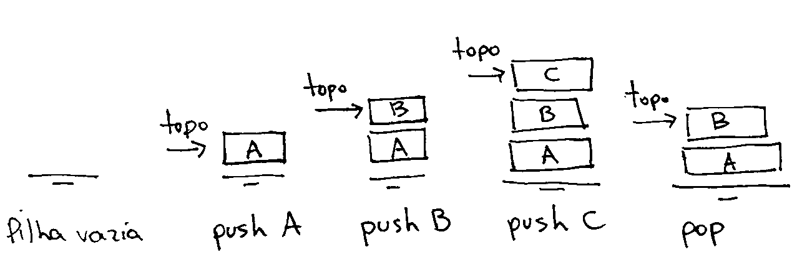

Políticas de acesso - Pilhas & Filas
Contato
- Jean Paulo Martins (jeanmartins utfpr edu br)
- Sala 105, Bloco S (UTFPR - Campus Pato Branco)
Conteúdo
Políticas de acesso e manipulação
Algumas estruturas de dados não requerem novas formas de armazenamento dos dados em memória. Nesses casos, tais estruturas são definidas apenas pela forma com a qual elas permitem o acesso e manipulação dos dados armazenados, o que chamei de política de acesso e manipulação.
Para melhor compreendermos essa ideia, iniciaremos o estudo de duas estruturas de dados (ou políticas de acesso e manipulação) de grande relevância: pilhas (stack) e filas (queue). Por serem apenas políticas de acesso, pilhas e filas podem ser implementadas utilizando como base diferentes tipos de estruturas de dados (contêiners). Neste primeiro momento, no entanto, assumiremos apenas a implementação de pilhas e filas utilizando o contêiner vector como base.
Pilhas (stack)
A estrutura de dados Pilha recebe este nome em analogia ao processo de empilhamento. De acordo com o dicionário web Michaelis, empilhar tem o seguinte significado:
-
em·pi·lhar Dispor em pilha ou ficar amontoado em pilha; amontoar(-se):
- Empilhou os pratos que havia acabado de enxugar.
- “[…] erguia o que estava pelo chão e empilhava as cadeiras sobre as mesinhas de mármore” (AA2).
- “Entrou no seu escritório e foi sentar-se à secretária. Defronte dele, com uma gravidade oficial, empilhavam-se grandes livros de escrituração mercantil” (AA2).
De acordo com esta definição, empilhar significa inserir um objeto em cima de outro. Desempilhar, portanto, se refere a remoção do objeto no topo da pilha.
Dada a analogia, define-se que uma estrutura de dados pilha é caracterizada pelo fato de que novos elementos somente podem ser inseridos em seu topo. A remoção de elementos da pilha, similarmente, somente pode acontecer para elementos no topo. O acesso ao elemento no topo da pilha, sem a remoção do mesmo, é muitas vezes necessário, desta forma um operador se faz necessário. Em resumo:
- Novos elementos são inseridos em apenas uma direção.
- O último elemento inserido é chamado o topo da pilha
- Essa operação é chamada
push
- Elementos são removidos em direção oposta à inserção
- Somente o elemento no topo pode ser removido diretamente.
- Essa operação é chamada
pop
- Este tipo de política de acesso ficou conhecido pela sigla:
- LIFO, do inglês last in, first out. O último elemento inserido é necessáriamente o primeiro a ser removido.

Estruturas do tipo stack são de grande utilidade em aspectos fundamentais da ciência da computação. Seja na construção de compiladores e linguagens de programação, por uma perspectiv teórica, ou no gerenciamento de memória da pilha de chamadas (stack call)
Implementações de pilhas em linguagens de programação:
- C++/STL, stack
- http://www.cplusplus.com/reference/stack/stack/
- Python, Using lists as stacks
- https://docs.python.org/2/tutorial/datastructures.html#using-lists-as-stacks
- C#, Stack
- https://msdn.microsoft.com/pt-br/library/system.collections.stack(v=vs.110).aspxs
Filas (queue)
A estrutura de dados fila (ou política de acesso) também recebe este nome por analogia ao processo de enfileiramento
- fi·la (Michaelis)
Sequência de pessoas ou coisas alinhadas uma atrás da outra, organizada geralmente por ordem cronológica de chegada ou por diferentes critérios…
- “Havia agora Betinha, Aureluce, Tanara e outras amigas barulhentas em volta, uma fila inteira delas no Cine Cruzeiro do Sul” (CFA).
- “Conjunto de soldados em fileira”
Por essa analogia é fácil notarmos que a estrutura de dados fila deve suportar operações análogas ao enfileiramento e o desenfileiramento. Em termos mais diretos, isso significa que a inserção de novos elementos em uma fila deve ser feita sempre em uma das pontas da estrutua (push_back ou push_front) enquanto a remoção poderia apenas ser feita na ponta oposta da estrutura (pop_front ou pop_back). Em resumo:
- Novos elementos são inseridos em apenas uma das pontas.
- Essa operação é chamada
push
- Essa operação é chamada
- Elementos são removidos da ponta oposta à inserção.
- Somente o elemento inicial pode ser removido diretamente.
- Essa operação é chamada
pop
- Este tipo de política de acesso ficou conhecido pela sigla:
- FIFO, do inglês first in, first out. O primeiro elemento inserido é necessáriamente o primeiro a ser removido.
Tipo abstrato de dados Lista
Listas são tipos abstratos de dados pois representam funcionalidades que podem ser implementadas (programadas) de diversas formas diferentes. Apesar disso, uma implementação da estrutura de dados lista deve sempre nos permitir a manipulação dos dados armazenados por meio de certas operações. Abaixo utilizo um arquivo .h para definir uma interface à estuturas de dados lista.
Implementação sobre list
Pilhas e filas, sendo apenas políticas de acesso, podem ser implementadas utilizando diferentes estruturas de dados como base (contêiner). Neste primeiro momento, utilizaremos como contêiner a estrutura abstrata list.
// **** list.h ****
#define Type int
// Uma definição abstrata da struct que representará a lista
typedef struct TAD_LIST list;
// Aloca memória inicial para o vetor
list* new_list();
// Desaloca a memória de v->data e do próprio v.
void free_list(list* v);
// Funções de remoção de elementos
Type list_erase(list* v, int i);
Type list_pop_back(list* v);
Type list_pop_front(list* v);
// Funções de inserção de elementos
void list_insert(list* v, Type value, int i);
void list_push_back(list* v, Type value);
void list_push_front(list* v, Type value);
// Funções de acesso aos dados
Type* list_at(list* v, int pos);
void list_set(list* v, int pos, Type value);
void list_resize(list* v);
void list_print(list* v);
// Retorna o tamanho da lista (número de elementos)
int list_size(list* v);
Pilhas
É fácil notar que todas as funcionalidades necessárias para manipular uma pilha estão indicadas em list.h. De fato, precisamos apenas de um subconjunto dessas funcionalidades, ou seja, pilhas são mais restritivas.
// **** stack.h ****
#include "list.h"
// A biblioteca abaixo permite o uso do tipo de dados `bool`
#include <stdbool.h>
// O tipo de dados list será utilizado para armazenar a pilha.
typedef list stack;
// Alocação desalocação
stack* new_stack();
void free_stack(stack* v);
// Inserção e remoção de elementos
Type stack_pop(stack* v);
void stack_push(stack* v, Type value);
// Observer o topo da pilha, sem remoção
Type* stack_top(stack* v);
bool stack_empty(stack* v);
Vejamos quais funcionalidades em list.h serão úteis para implementarmos uma estrutura pilha (stack).
Opção 1 (Topo=Fim) Se considerarmos que o topo da pilha estará sempre no fim da lista, uma pilha somente deve permitir que inserções e remoções sejam feitas do fim da lista. Utilizaríamos então as operações:
void list_push_back(list* v, Type value);
Type list_pop_back(list* v);
Opção 2 (Topo=Início) Se considerarmos que o topo da pilha estará sempre no início da lista, uma pilha somente deve permitir que inserções e remoções sejam feitas do início da lista. Utilizaríamos então as operações:
void list_push_front(list* v, Type value);
Type list_pop_front(list* v);
Cada uma dessas opções insere e remove elementos de uma das pontas de vector. Por razões de eficiência, utilizaremos a opção 1 a seguir.
- Questão: Porque devemos preferir a opção 1 para implementação de
stackse o contêiner base forvector?
// **** stack.c ****
#include "stack.h"
// Alocação desalocação
stack* new_stack() {
stack* s = new_list();
return s;
}
void free_stack(stack* v){
free_list(v);
}
// Inserção e remoção de elementos
Type stack_pop(stack* v) {
return list_pop_back(v);
}
void stack_push(stack* v, Type value) {
list_push_back(v, value);
}
// Retorna um ponteiro para o topo da pilha
Type* stack_top(stack* v) {
return list_at(v, list_size(v)-1);
}
bool stack_empty(stack* v) {
return list_size() == 0;
}
Filas
É fácil notar que todas as funcionalidades necessárias para manipular uma estão indicadas em list.h. De fato, precisamos apenas de um subconjunto das funcionalidades disponíveis, ou seja, filas também são mais restritivas.
Vejamos quais funcionalidades de list.h serão úteis para implementarmos uma estrutura fila (queue).
// **** queue.h ****
#include "list.h"
// A biblioteca abaixo permite o uso do tipo de dados `bool`
#include <stdbool.h>
// O tipo de dados list será utilizado para armazenar a pilha.
typedef list queue;
// Alocação desalocação
queue* new_queue();
void free_stack(queue* v);
// Inserção e remoção de elementos
Type queue_pop(queue* v);
void queue_push(stack* v, Type value);
// Observer o topo da pilha, sem remoção
Type* queue_back(queue* v);
Type* queue_front(queue* v);
bool queue_empty(queue* v);
Do mesmo modo que em pilhas, existem duas opções para a implementação de filas, sendo eficiência o fator que as diferencia.
Opção 1 (Início = Início)
Se considerarmos que o início da fila será armazenado no início da lista então uma estrutura de dados queue deverá permitir que inserções sejam feitas apenas no final da lista, enquanto remoções sejam feitas apenas no início da lista. Isso pode ser implementado utilizando as funções:
void list_push_back(list* v, Type value);
Type list_pop_front(list* v);
Opção 2 (Início = Fim)
Se considerarmos que o início da fila será armazenado no fim da lista então uma estrutura de dados queue deverá permitir que inserções sejam feitas apenas no início da lista, enquanto remoções sejam feitas apenas do final da lista. Isso pode ser implementado utilizando as funções:
void list_push_front(list* v, Type value);
Type list_pop_back(list* v);
Cada uma dessas opções insere elementos em uma das pontas da lista e remove da outra.
- Questão: Quais as deficiências em termos da eficiência de cada uma das opções?
// **** queue.c ***
#include "queue.h"
// Alocação desalocação
queue* new_queue() {
queue* s = new_list();
return s;
}
void free_queue(queue* v){
free_list(v);
}
// Inserção e remoção de elementos
Type queue_pop(queue* v) {
return list_pop_back(v);
}
void queue_push(queue* v, Type value) {
list_push_back(v, value);
}
// Retorna um ponteiro para o início da fila
Type* queue_front(queue* v) {
return list_at(v, 0);
}
// Retorna um ponteiro para o fim da fila
Type* queue_back(queue* v) {
return list_at(v, list_size(v)-1);
}
// Retorna verdadeiro se a fila estiver vazia
bool queue_empty(queue* v) {
return list_size(v) == 0;
}